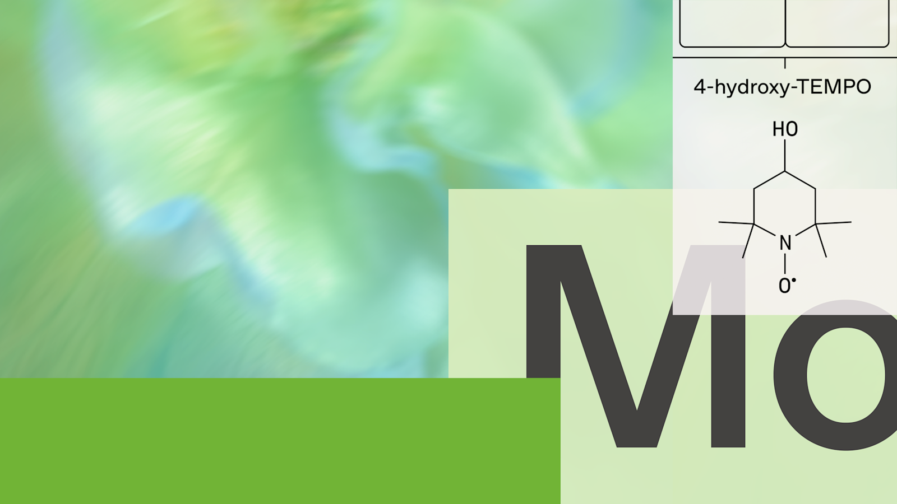
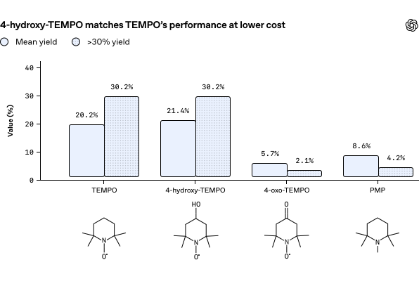
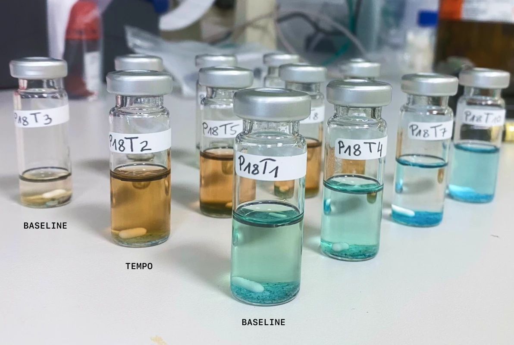

AI가 화학 논문을 읽고 “그럴듯한 아이디어”를 내는 단계는 이미 지나갔다. 이번에는 모델이 연구 제안을 만들고, 자동화 실험실이 10,080번의 반응을 돌렸고, 사람 화학자가 그 결과를 다시 손으로 검증했다. OpenAI와 Molecule.one은 이 과정을 “완전 자율”이 아니라 near-autonomous, 거의 자율적인 AI 화학자라고 불렀다.
핵심은 크다. GPT‑5.4가 primary sulfonamide의 Chan–Lam coupling이라는 까다로운 약물화학 반응에서 TEMPO 계열 첨가제를 제안했고, 최적 조건에서 평균 수율은 16.6%에서 25.2%로 올랐다. 30%를 넘긴 반응 비율도 15.6%에서 37.5%로 두 배 이상 늘었다.

“이번 결과를 한 문장으로 말하면, AI가 정확히 뭘 한 건가요?”
답: 모델이 단순히 문헌을 요약한 게 아닙니다. OpenAI는 GPT‑5.4를 Molecule.one의 Maria AI와 고처리량 실험실 Maria Lab에 연결했습니다. 목표는 일부 중요한 반응군 중 하나를 개선하는 것이었고, 그 안에서 모델은 연구 제안을 만들고, 실험 설계를 돕고, 실험 데이터를 해석하고, 후속 실험까지 제안했습니다.
다만 여기서 중요한 단어는 “near-autonomous”입니다. 인간이 빠진 실험이 아니었습니다. 사람 화학자들은 프롬프트를 설계하고, 제안을 평가하고, 실제 실험에 올릴 후보를 골랐습니다. 실험 계획에 제한적 수정을 넣었고, 시약과 소모품 준비 같은 기본 실험실 운영도 도왔습니다. 마지막 결과는 독립적으로 벤치 스케일에서 반복 검증했습니다.
그러니까 이 프로젝트의 장면은 이렇습니다. AI가 칠판 앞에서 가설을 말합니다. Maria AI가 그 말을 실험 프로토콜로 바꿉니다. Maria Lab이 수천 개 반응을 작은 스케일로 돌립니다. 다시 AI가 데이터를 보고 다음 실험을 좁힙니다. 그리고 마지막에는 사람이 플라스크와 바이알 앞에서 “진짜로 되나?”를 확인합니다.
Maria Lab은 OAI-M1-03에서 총 10,080개의 반응을 수행한 Molecule.one의 고처리량 실험실이다. 이 영상이 필요한 이유는 분명하다. 이번 결과의 주인공은 텍스트 모델 하나가 아니라, 모델·에이전트·자동화 실험실·사람 화학자가 연결된 물리적 루프이기 때문이다.
“왜 하필 Chan–Lam coupling이었나요? 약물화학에서는 뭐가 그렇게 답답했나요?”
답: 약물화학에서 합성은 병목입니다. 과학자는 만들 수 있거나 구할 수 있는 분자만 테스트할 수 있습니다. 아무리 좋아 보이는 후보 물질이 있어도, 만드는 경로가 낮은 수율과 부산물로 막히면 프로젝트는 느려지거나 포기됩니다.
Chan–Lam coupling은 탄소-질소 결합, 즉 C–N bond를 만드는 유용한 반응입니다. 탄소-질소 결합은 의약품에서 매우 흔합니다. 이 반응은 구리 촉매를 쓰고, 비교적 온화한 조건에서 돌아가며, 공기와 수분에도 어느 정도 관대하다는 장점이 있습니다.
문제는 모든 출발물질에서 똑같이 잘 되지 않는다는 점입니다. 특히 primary sulfonamide와 boronic acid를 연결하는 Chan–Lam coupling은 역사적으로 수율이 낮았습니다. sulfonamide는 항암제, 항균제, 이뇨제 등 다양한 약물군에서 보이는 중요한 구조입니다. 그런데 그 구조를 더 넓은 분자군에 붙이는 반응이 자꾸 삐걱거린다면, 의약화학자는 탐색할 수 있는 화학 공간 자체가 좁아집니다.
논문은 이 난점을 더 구체적으로 설명합니다. boronic acid 쪽이 반응 중 산화적 deboronation, 즉 탄소-붕소 결합이 깨지는 부반응으로 소모됩니다. 그렇게 생긴 phenol 부산물은 다시 원치 않는 etherification으로 이어질 수 있습니다. 결국 원하는 C–N 결합을 만들기 전에 재료가 새어 나가는 셈입니다.
이 프로젝트의 질문은 “AI가 새로운 분자를 상상할 수 있나?”보다 더 현실적입니다. “이미 중요한 반응인데 잘 안 되는 조건을, 실험 데이터로 조금 더 쓸 만하게 만들 수 있나?”입니다.
“GPT‑5.4가 낸 제안 중 무엇이 사람 화학자들에게 흥미로웠나요?”
답: 네 개의 상위 제안이 Maria Lab에서 테스트됐고, 그중 원문이 자세히 공개한 것은 OAI-M1-03입니다. 이 제안은 primary sulfonamide Chan–Lam coupling에서 TEMPO 같은 mild oxidant가 반응을 개선할 수 있다는 아이디어였습니다.
TEMPO는 2,2,6,6-tetramethylpiperidinyloxyl의 약자로, 안정한 radical oxidant입니다. 유기화학에서는 알코올 산화 같은 맥락에서 잘 알려져 있습니다. 하지만 primary sulfonamide Chan–Lam coupling의 일반성을 높이는 핵심 첨가제로 TEMPO를 다시 꺼내 든 것은 충분히 의외였습니다. OpenAI 원문도 “chemists found the suggestion both surprising and interesting”라고 표현합니다.
논문 초록 기준 최적 조건은 **TEMPO 2 equivalents와 Cu(OAc)₂ 20 mol%**입니다. 이 조건에서 원하는 C–N 결합 형성이 늘고, 강한 산화 조건이나 무첨가 조건과 비교해 oxidative deboronation이 줄었습니다. 쉽게 말하면, TEMPO가 무작정 세게 밀어붙이는 산화제가 아니라, 생산적인 구리 촉매 회전과 출발물질 분해 사이의 균형을 더 잘 잡아준 것으로 보입니다.
이 아이디어는 처음부터 완성형이 아니었습니다. 시스템은 1차 실험 데이터를 분석한 뒤 2차 실험을 더 좁혀 제안했습니다. 그 과정에서 TEMPO보다 저렴하고 제거가 쉬울 가능성이 있는 4-hydroxy-TEMPO도 비슷한 성능을 낼 수 있다는 후속 발견이 나왔습니다.

“숫자로 보면 어느 정도 개선이었나요? 실험이 작은 스케일에서만 그럴듯했던 건 아닌가요?”
답: Maria Lab은 두 번의 microscale screening campaign에서 총 10,080개의 반응을 돌렸습니다. OpenAI는 이 규모를 “화학자가 매일 세 번씩 반응을 돌려도 10년이 걸리는 양”이라고 설명합니다. 이 숫자가 중요한 이유는 화학 결과가 몇 개 예시에서는 쉽게 착시를 일으키기 때문입니다. 한두 쌍의 출발물질에서는 좋아 보여도, 조금만 분자 구조가 달라지면 무너질 수 있습니다.
최적화 조건에서 결과는 이렇게 바뀌었습니다.
- boronic acid 테스트 세트의 **88%**에서 수율 개선
- sulfonamide 테스트 세트의 **83%**에서 수율 개선
- 평균 추정 수율: 16.6% → 25.2%
- 30% 초과 수율 반응 비율: 15.6% → 37.5%
- bench-scale validation: 14개 대표 substrate pair 중 11개에서 수율 증가
- 그중 8개 pair에서는 두 배 이상 개선
특히 전자 부족 boronic acid, 즉 electron-poor boronic acid에서 일관된 개선이 관찰됐다는 점도 논문이 강조합니다. 약물화학에서 실제로 마주치는 출발물질은 예쁘게 단순한 교과서 분자만 있는 게 아닙니다. 그래서 특정 구조군에서 반복적으로 효과가 보였다는 건 꽤 실용적인 신호입니다.

“이게 완전한 AI 과학자 탄생이라고 봐도 되나요?”
답: 그건 아닙니다. 오히려 OpenAI 원문은 그 선을 꽤 분명하게 긋습니다. 이 결과는 모델이 유기화학에서 유용한 기여를 할 수 있음을 보여주지만, AI가 독립적으로 화학 연구 프로그램을 처음부터 끝까지 운영할 수 있음을 보여주지는 않습니다.
한계는 여러 겹입니다.
첫째, 인간 판단이 계속 필요했습니다. 어떤 제안을 실험에 올릴지, 어떤 실험 계획을 수정해야 하는지, 어떤 결과를 신뢰할지에 사람 화학자의 판단이 들어갔습니다. 예컨대 인간이 넣은 가장 큰 수정 중 하나는 DMSO 용매를 피하는 것이었습니다. 강한 산화제 비교 조건에서 DMSO가 반응할 수 있다는 우려 때문이었습니다.
둘째, 특수한 고처리량 실험 인프라가 필요했습니다. Maria AI와 Maria Lab이 없었다면 10,080개의 반응을 짧은 기간에 돌리기 어렵습니다. 따라서 이 결과는 “노트북 하나로 모든 연구실을 대체했다”가 아니라 “프런티어 모델이 자동화 실험실과 연결될 때 연구 루프가 얼마나 빨라질 수 있는가”에 가깝습니다.
셋째, 일반화는 아직 검증되지 않았습니다. 이 방법이 다른 coupling reaction, 다른 substrate class, 제조 조건에서도 통할지는 모릅니다. bench validation도 14개 대표 pair에 한정됐습니다. 반응 메커니즘, substrate scope, 독립 연구실 재현성은 다음 단계로 남아 있습니다.
“안전 문제는 어떻게 다뤘나요? 화학 AI는 양날의 검 아닌가요?”
답: 원문은 Preparedness 섹션을 따로 둡니다. 화학 능력은 의약품과 소재 개발을 도울 수 있지만, 동시에 오용 가능성도 있기 때문입니다.
이번 프로젝트는 범위를 의도적으로 제한했습니다. 목표는 알려진 coupling reaction을 개선해 drug-like molecule 합성에 도움을 주는 합법적 약물화학 문제였습니다. 독소, 화학무기, 유해 화합물 설계는 포함하지 않았습니다. OpenAI는 이 결과를 그런 유해 응용을 도울 수 있다는 증거로 읽어서는 안 된다고 선을 긋습니다.
또한 모델은 관련 화학·생물학 영역 평가를 거쳤고, 유해 응용 요청을 거부하도록 설계됐다고 설명합니다. 물리 실험 루프에도 추가 통제가 있었습니다. 사람 화학자가 실험실에 들어갈 제안을 고르고, 실험 계획을 검토하고, 실제 인프라 통제권을 유지했습니다.
이 대목은 과장 없이 중요합니다. 화학 AI에서 안전은 “모델이 착하게 답한다”로 끝나지 않습니다. 어떤 문제가 선택되는지, 어떤 실험이 실제 장비에 올라가는지, 누가 승인하는지, 결과가 어떻게 검증되는지까지가 안전장치입니다.
“전체 일정은 얼마나 걸렸고, 다음 질문은 뭔가요?”
답: 첫 프롬프트가 들어간 날짜는 3월 4일, OAI-M1-03 결과를 독립 전문가에게 공유한 날짜는 6월 4일이었습니다. 전체 과정은 약 3개월이 걸렸습니다.
네 개의 선택된 제안 중 OAI-M1-03은 이번 글과 논문으로 자세히 공개됐습니다. 나머지 세 제안 중 OAI-M1-02와 OAI-M1-04는 Maria Lab에서 실험적으로 입증됐고, OAI-M1-01은 반증됐습니다. 그 결과에 대한 분석은 진행 중입니다.
다음 단계는 화려한 선언보다 훨씬 화학적입니다.
- 더 넓은 starting material에서 테스트하기
- TEMPO와 4-hydroxy-TEMPO가 왜 작동하는지 메커니즘 밝히기
- 어디까지 잘 되고 어디서 실패하는지 substrate scope 그리기
- 다른 실험실에서 독립 재현하기
- 실제 medicinal chemistry workflow에서 쓸 만큼 실용적인지 확인하기
논문 PDF는 여기서 볼 수 있습니다: TEMPO Improves Generality and Decreases Oxidative Deboronation in Chan–Lam Couplings of Primary Sulfonamides
“그래서 이 결과를 어떻게 읽어야 하나요?”
답: 이번 결과의 신선함은 AI가 “새로운 과학 법칙”을 혼자 발견했다는 데 있지 않습니다. 더 현실적이고, 그래서 더 중요합니다. 모델이 문헌을 읽고, 의외지만 테스트 가능한 가설을 제안하고, 자동화 실험실이 그 가설을 대규모로 두들겨 보고, 사람이 마지막에 다시 확인했습니다.
과학에서 병목은 아이디어 부족만이 아닙니다. 실험 설계, 실패한 조건 제거, 데이터 해석, 후속 실험 선택, 재현성 확인이 모두 병목입니다. 이번 프로젝트는 AI가 그 루프의 여러 지점에 들어갈 수 있음을 보여줍니다.
하지만 동시에 이 결과는 AI 과학자의 가장 좋은 정의도 바꿔 놓습니다. 좋은 AI 과학자는 사람을 지우는 존재가 아니라, 사람이 더 많은 가설을 더 빨리, 더 엄격하게 시험하게 만드는 파트너에 가깝습니다. 실험실에서 중요한 건 누가 아이디어를 냈느냐보다, 그 아이디어가 바이알 안에서 살아남았느냐입니다.
출처: OpenAI, “A near-autonomous AI chemist improves a challenging reaction in medicinal chemistry”